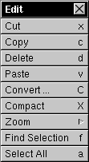

The Edit Menu


The Edit Menu allows you to:
 Cut the selection out of your current sound document and place it on the Pasteboard to be Pasted elsewhere.
Cut the selection out of your current sound document and place it on the Pasteboard to be Pasted elsewhere.
 Copy the selection from your current sound document and place it on the Pasteboard to be Pasted elsewhere.
Copy the selection from your current sound document and place it on the Pasteboard to be Pasted elsewhere.
 Delete the selection from your current sound document.
Delete the selection from your current sound document.
 Paste a sound from the Pasteboard into your current sound document. Note: Because Resound (and NeXT's SoundKit) doesn't actually copy the data from a cut or copied sound onto the Pasteboard, if you close the sound window from whence you cut or copied some data, you will not be able to paste the data (the original is gone).
Paste a sound from the Pasteboard into your current sound document. Note: Because Resound (and NeXT's SoundKit) doesn't actually copy the data from a cut or copied sound onto the Pasteboard, if you close the sound window from whence you cut or copied some data, you will not be able to paste the data (the original is gone).
 Convert your sound's format using the Convert Panel. For more information on the Convert Panel, press here:
Convert your sound's format using the Convert Panel. For more information on the Convert Panel, press here: 
 Compact your sound. After Cutting, Copying, Deleting, or Pasting, a sound becomes fragmented. This does not effect playback of sound, but many modules may not operate on unfragmented sound. Note that Compacting a sound could take a long time and a lot of memory for large sounds.
Compact your sound. After Cutting, Copying, Deleting, or Pasting, a sound becomes fragmented. This does not effect playback of sound, but many modules may not operate on unfragmented sound. Note that Compacting a sound could take a long time and a lot of memory for large sounds.
 If possible, scroll directly to the beginning of the selected part of the sound by choosing Find Selection.
If possible, scroll directly to the beginning of the selected part of the sound by choosing Find Selection.
 Select All of your sound document.
Select All of your sound document.
In addition, the Edit Menu has the Zoom Menu  as a submenu.
as a submenu.